Matplotlib Scatter Plots
We can use the scatter() method in pyplot to draw scatter plots.
The syntax of the scatter() method is as follows:
matplotlib.pyplot.scatter(x, y, s=None, c=None, marker=None, cmap=None, norm=None, vmin=None, vmax=None, alpha=None, linewidths=None, *, edgecolors=None, plotnonfinite=False, data=None, **kwargs)
Parameter description:
x，y: arrays of the same length, which are the data points we are about to plot, input data.
s: size of the points, default 20, can also be an array, where each parameter of the array is the size of the corresponding point.
c: color of the points, default blue 'b', can also be an RGB or RGBA two-dimensional row array.
marker: point style, default small circle 'o'.
cmap: Colormap, default None, a scalar or the name of a colormap, only used when c is an array of floats. If not declared, it is image.cmap.
norm: Normalize, default None, data brightness between 0-1, only used when c is an array of floats.
vmin，vmax：: brightness setting, ignored when the norm parameter exists.
alpha：: transparency setting, between 0-1, default None, meaning opaque.
linewidths：: length of the marker point.
edgecolors：: color or color sequence, default 'face', optional values are 'face', 'none', None.
plotnonfinite：: boolean value, sets whether to draw points using unqualified c (inf, -inf or nan).
**kwargs：: other parameters.
The following example passes arrays of the same length to the scatter() function, one for the x-axis values and the other for the y-axis values:
Example
import numpy as np
x = np.array([1, 2, 3, 4, 5, 6, 7, 8])
y = np.array([1, 4, 9, 16, 7, 11, 23, 18])
plt.scatter(x, y)
plt.show()
The displayed result is as follows:
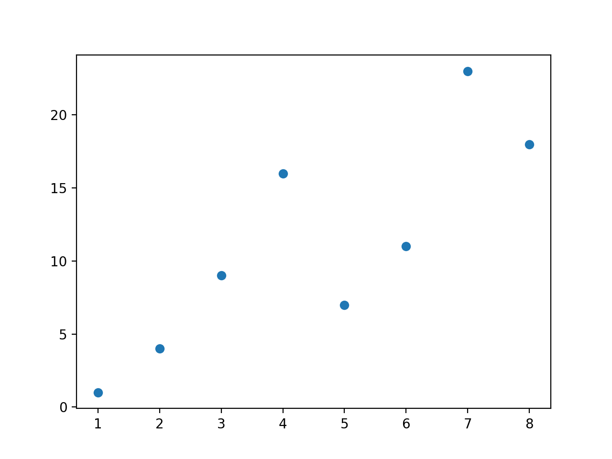
Set the size of the markers:
Example
import numpy as np
x = np.array([1, 2, 3, 4, 5, 6, 7, 8])
y = np.array([1, 4, 9, 16, 7, 11, 23, 18])
sizes = np.array([20,50,100,200,500,1000,60,90])
plt.scatter(x, y, s=sizes)
plt.show()
The displayed result is as follows:
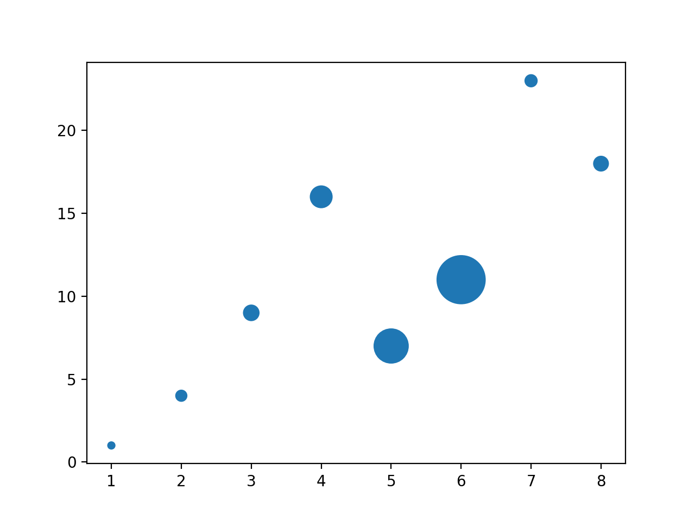
Customize the color of the points:
Example
import numpy as np
x = np.array([1, 2, 3, 4, 5, 6, 7, 8])
y = np.array([1, 4, 9, 16, 7, 11, 23, 18])
colors = np.array(["red","green","black","orange","purple","beige","cyan","magenta"])
plt.scatter(x, y, c=colors)
plt.show()
The displayed result is as follows:
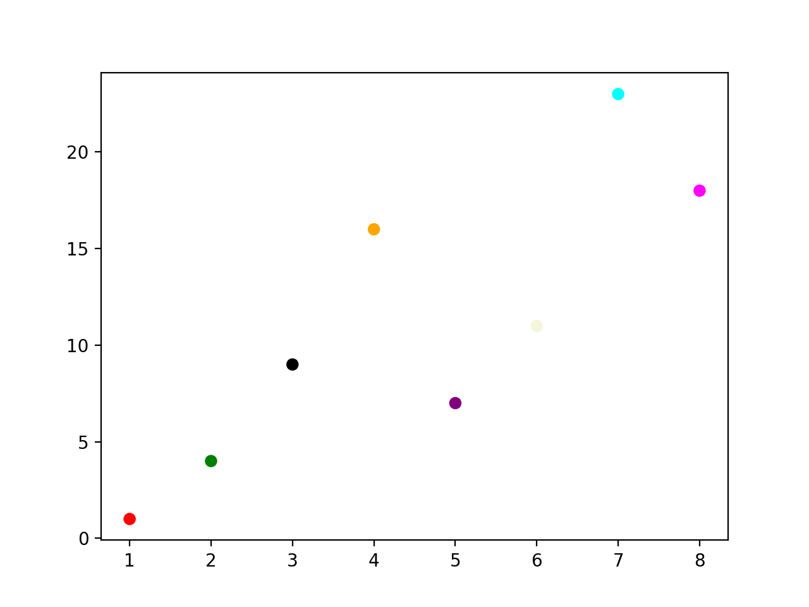
Plot two sets of scatter plots:
Example
import numpy as np
x = np.array([5,7,8,7,2,17,2,9,4,11,12,9,6])
y = np.array([99,86,87,88,111,86,103,87,94,78,77,85,86])
plt.scatter(x, y, color = 'hotpink')
x = np.array([2,2,8,1,15,8,12,9,7,3,11,4,7,14,12])
y = np.array([100,105,84,105,90,99,90,95,94,100,79,112,91,80,85])
plt.scatter(x, y, color = '#88c999')
plt.show()
The displayed result is as follows:
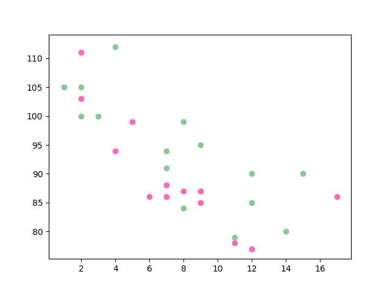
Use random numbers to set the scatter plot:
Example
import matplotlib.pyplot as plt
# Seed for the random number generator
np.random.seed(19680801)
N = 50
x = np.random.rand(N)
y = np.random.rand(N)
colors = np.random.rand(N)
area = (30 * np.random.rand(N))**2 # 0 to 15 point radii
plt.scatter(x, y, s=area, c=colors, alpha=0.5) # Set color and transparency
plt.title("RUNOOB Scatter Test") # Set title
plt.show()
The displayed result is as follows:
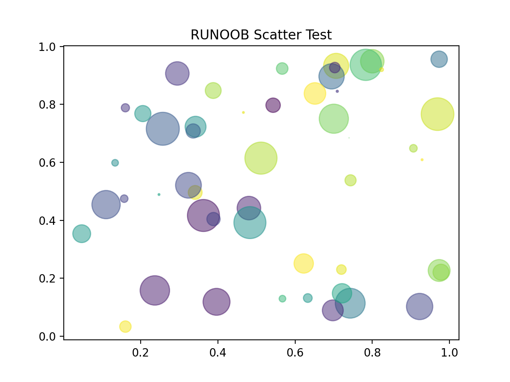
Colorbar Colormap
The Matplotlib module provides many available colorbars.
A colorbar is like a color list, where each color has a value ranging from 0 to 100.
Here is an example of a colorbar:
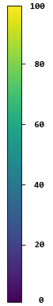
To set a colorbar, you need to use the cmap parameter, with the default value 'viridis', and then set the color values to an array from 0 to 100.
Example
import numpy as np
x = np.array([5,7,8,7,2,17,2,9,4,11,12,9,6])
y = np.array([99,86,87,88,111,86,103,87,94,78,77,85,86])
colors = np.array([0, 10, 20, 30, 40, 45, 50, 55, 60, 70, 80, 90, 100])
plt.scatter(x, y, c=colors, cmap='viridis')
plt.show()
The displayed result is as follows:
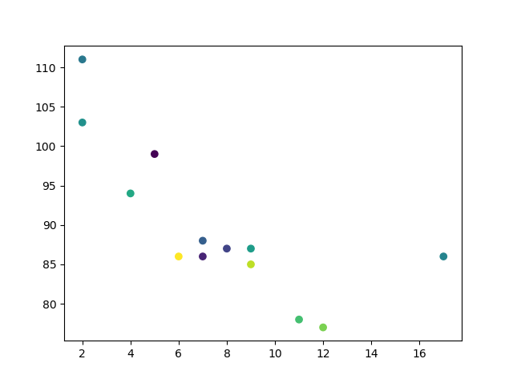
If you want to display the colorbar, you need to use theplt.colorbar()method:
Example
import numpy as np
x = np.array([5,7,8,7,2,17,2,9,4,11,12,9,6])
y = np.array([99,86,87,88,111,86,103,87,94,78,77,85,86])
colors = np.array([0, 10, 20, 30, 40, 45, 50, 55, 60, 70, 80, 90, 100])
plt.scatter(x, y, c=colors, cmap='viridis')
plt.colorbar()
plt.show()
The displayed result is as follows:

Use a different colorbar parameter, set cmap toafmhot_r：
Example
import numpy as np
x = np.array([5,7,8,7,2,17,2,9,4,11,12,9,6])
y = np.array([99,86,87,88,111,86,103,87,94,78,77,85,86])
colors = np.array([0, 10, 20, 30, 40, 45, 50, 55, 60, 70, 80, 90, 100])
plt.scatter(x, y, c=colors, cmap='afmhot_r')
plt.colorbar()
plt.show()
The displayed result is as follows:
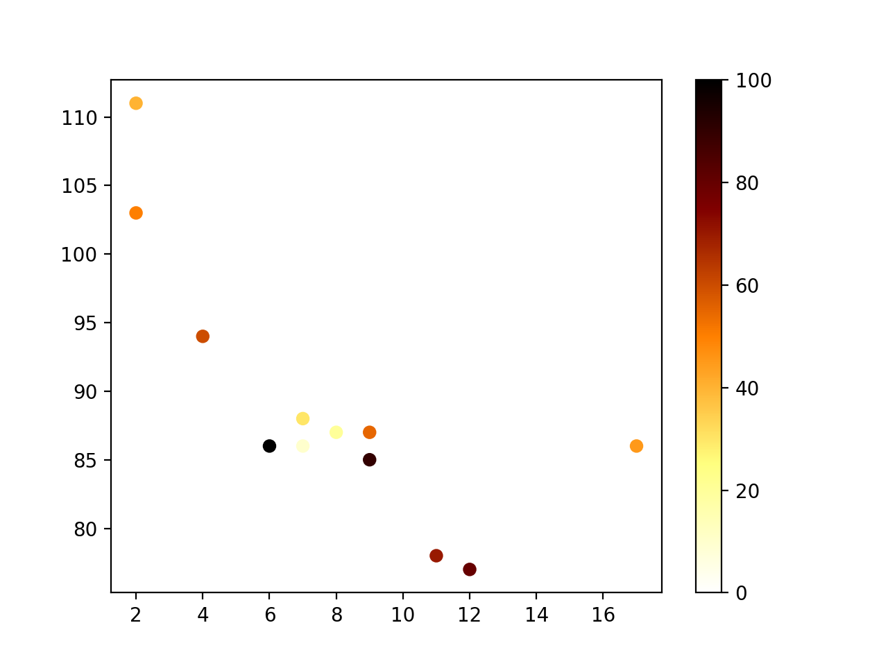
The colorbar parameter values can be the following:
| Color names | Reserved keywords | |
|---|---|---|
| Accent | Accent_r | |
| Blues | Blues_r | |
| BrBG | BrBG_r | |
| BuGn | BuGn_r | |
| BuPu | BuPu_r | |
| CMRmap | CMRmap_r | |
| Dark2 | Dark2_r | |
| GnBu | GnBu_r | |
| Greens | Greens_r | |
| Greys | Greys_r | |
| OrRd | OrRd_r | |
| Oranges | Oranges_r | |
| PRGn | PRGn_r | |
| Paired | Paired_r | |
| Pastel1 | Pastel1_r | |
| Pastel2 | Pastel2_r | |
| PiYG | PiYG_r | |
| PuBu | PuBu_r | |
| PuBuGn | PuBuGn_r | |
| PuOr | PuOr_r | |
| PuRd | PuRd_r | |
| Purples | Purples_r | |
| RdBu | RdBu_r | |
| RdGy | RdGy_r | |
| RdPu | RdPu_r | |
| RdYlBu | RdYlBu_r | |
| RdYlGn | RdYlGn_r | |
| Reds | Reds_r | |
| Set1 | Set1_r | |
| Set2 | Set2_r | |
| Set3 | Set3_r | |
| Spectral | Spectral_r | |
| Wistia | Wistia_r | |
| YlGn | YlGn_r | |
| YlGnBu | YlGnBu_r | |
| YlOrBr | YlOrBr_r | |
| YlOrRd | YlOrRd_r | |
| afmhot | afmhot_r | |
| autumn | autumn_r | |
| binary | binary_r | |
| bone | bone_r | |
| brg | brg_r | |
| bwr | bwr_r | |
| cividis | cividis_r | |
| cool | cool_r | |
| coolwarm | coolwarm_r | |
| copper | copper_r | |
| cubehelix | cubehelix_r | |
| flag | flag_r | |
| gist_earth | gist_earth_r | |
| gist_gray | gist_gray_r | |
| gist_heat | gist_heat_r | |
| gist_ncar | gist_ncar_r | |
| gist_rainbow | gist_rainbow_r | |
| gist_stern | gist_stern_r | |
| gist_yarg | gist_yarg_r | |
| gnuplot | gnuplot_r | |
| gnuplot2 | gnuplot2_r | |
| gray | gray_r | |
| hot | hot_r | |
| hsv | hsv_r | |
| inferno | inferno_r | |
| jet | jet_r | |
| magma | magma_r | |
| nipy_spectral | nipy_spectral_r | |
| ocean | ocean_r | |
| pink | pink_r | |
| plasma | plasma_r | |
| prism | prism_r | |
| rainbow | rainbow_r | |
| seismic | seismic_r | |
| spring | spring_r | |
| summer | summer_r | |
| tab10 | tab10_r | |
| tab20 | tab20_r | |
| tab20b | tab20b_r | |
| tab20c | tab20c_r | |
| terrain | terrain_r | |
| twilight | twilight_r | |
| twilight_shifted | twilight_shifted_r | |
| viridis | viridis_r | |
| winter | winter_r |
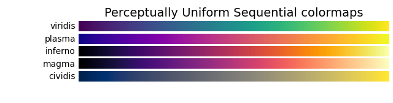
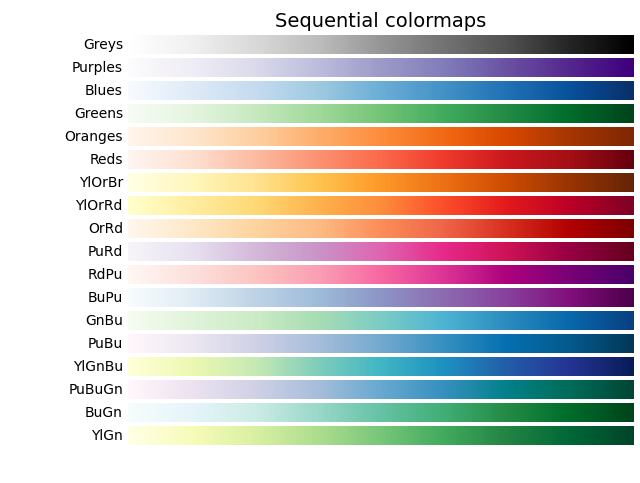
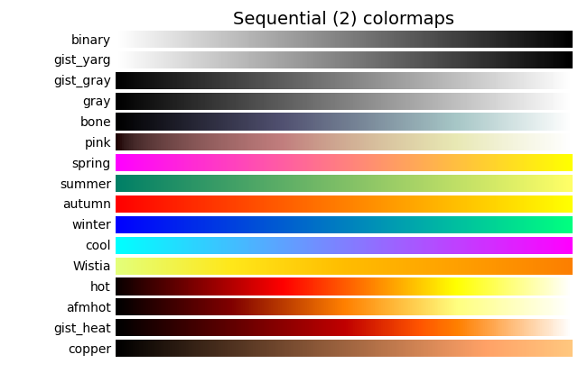
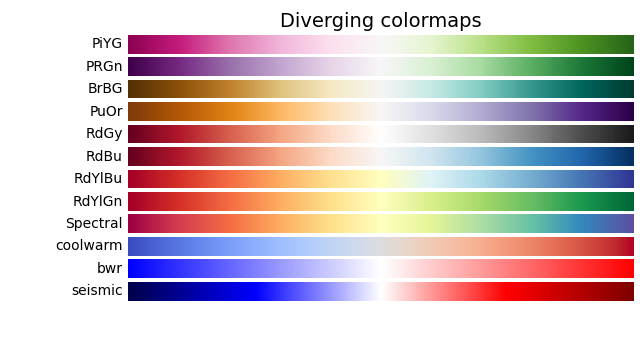
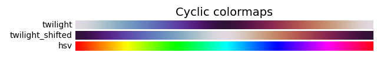
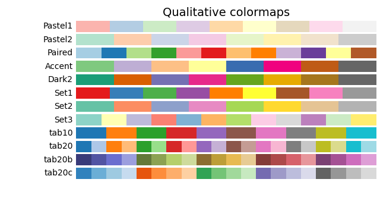
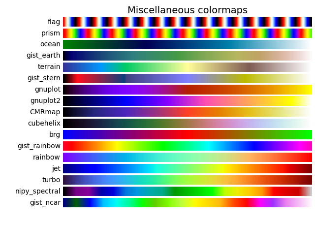
Other extensions
Click to share notes
<p style="font-size:14px;">Notes must be an extension of the content of this article!</p><br> <p style="font-size:12px;"><a href="../tougao.html" target="_blank">Article submission, you can click here</a></p> <p style="font-size:14px;"><a href="../w3cnote/runoob-user-test-intro.html" target="_blank">How to obtain the registration invitation code</a></p> <h3 class="text-muted"><i class="fa fa-info-circle" aria-hidden="true"></i> Before sharing notes, you must <a href=";.html" class="runoob-pop">log in</a>!</h3> <p><a href="../w3cnote/runoob-user-test-intro.html" target="_blank">How to obtain the registration invitation code</a></p>